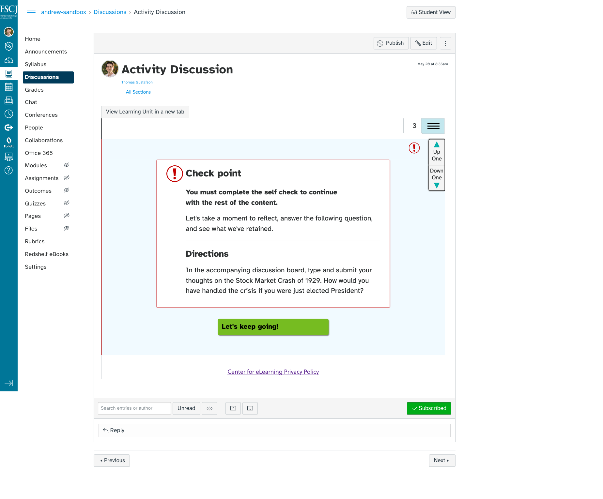

Interactive Learning Platform
Challenge
How might we afford learners a more meaningful interaction with the content in asynchronous online courses? How might we bridge the gap between various types of interaction—learner-to-learner, learner-to-faculty and learner-to-content—in these asynchronous online courses?
Process
For as long as I have been a member of the FSCJ’s Center for eLearning, we’ve developed interactive content called learning units for our asynchronous courses. We’ve been through a number of iterations, but the navigation and utility of the learning units have remained basically unchanged. When I entered a leading role in experience design with my team, we wanted to modernize our learning unit framework to include more features, but we didn’t know how we should go about it. I started by listening.
-
Through talking with our instructional designers and faculty, I learned that most saw learning units as glorified PowerPoints, and that limited their affordances. I believed the issue was the navigation’s being so similar to PowerPoint slides.
-
I had a chance to test this theory when an instructional designer accepted my request to build a web-based interactive activity. This product was well-enough received by stakeholders to know I might be on to something. I then further questioned, “How might we change user navigation to promote reflection and engagement with the content?”
-
My team and I researched authoring tools to see how others have handled this issue and iterated through a number of lo-fi prototypes before landing on our current iteration.
We kept the template as a single-page application so learners could print the material or save it as a PDF for offline use. We decided to allow for infinity scroll, next/previous buttons from one article to the next, and a table of contents for users’ choice in navigation. We placed locks on content only where it was meaningful at checkpoints. Finally, we decided for a custom product over an authoring tool because it will allow us to gather user analytics & push out surveys to users through our platform.
Platform in desktop view. Getting the correct answer at a checkpoint.
-
Platform in desktop view. Getting the wrong answer at a checkpoint.
-
Platform in mobile view. Getting the correct answer at a checkpoint.
-
Platform in mobile view. Getting the wrong answer at a checkpoint.
-
Because we plan on having these iframed into our online courses, we also view these checkpoints as a potential prompt for discussion.
 -
Next steps include creating a hi-fi prototype of this template for learner and faculty testing and feedback. Due to student privacy laws, we have to tread carefully about what we ask learners about their experiences, but we have been approved to send out surveys to online learners and request contact information. The goal is to 1) receive feedback on how learners view the current state of learning units and 2) to be able to reach out to them directly so that we can let them test our future features prior to release.